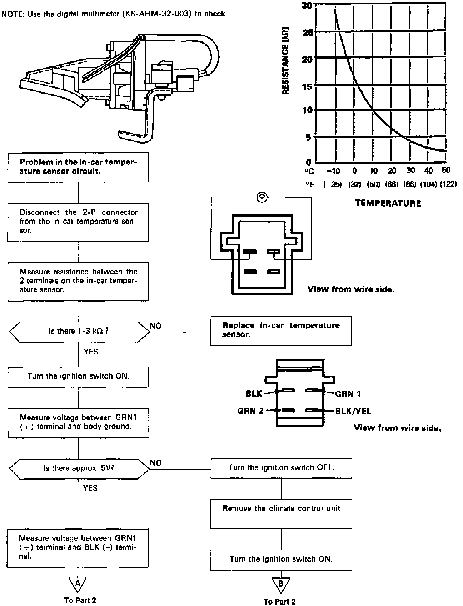
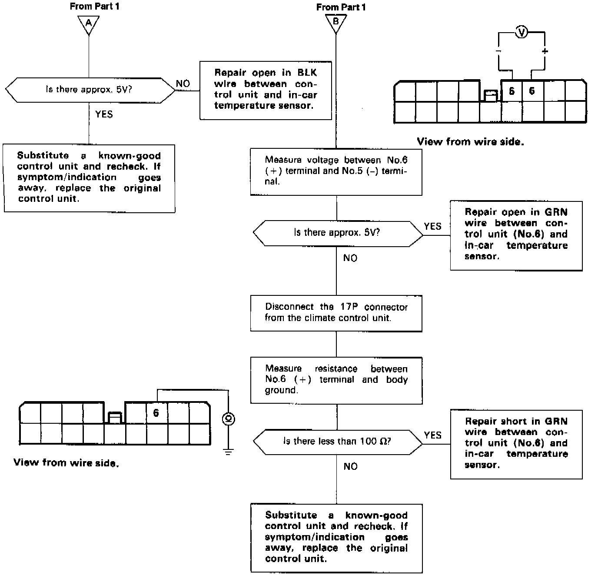

Sedan
In-Car Temperature SensorSelf-diagnosis indicator light F comes on: Indicates a problem in the In-car Temperature Sensor Circuit.
The in-car temperature sensor is a temperature dependant resistor (thermistor). The resistance of the thermistor decreases as the temperature inside the car increases.
NOTE: Use the digital multimeter (KS-AHM-32-003) to check.

